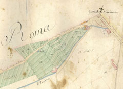

|
La copia del Catasto Gregoriano rimasta in uso presso gli
uffici locali del Censo locali fu utilizzata fino al 1952, quando
fu attivato il Nuovo Catasto Terreni. Mentre le variazioni sono
riportate nella corposa serie di registri, la cartografia relativa,
comprendente ca. 10 mila fogli di mappa, è stata annotata e rimaneggiata
fino ad essere in molti casi copiata dagli originali, quando questi
erano troppo deteriorati.
Il passaggio allo Stato italiano e le vicende istituzionali successive
comportarono spesso variazioni di circoscrizione, con passaggi
di parti di un territorio comunale ad un altro.
Il materiale cartografico del cessato catasto rustico è stato
versato presso l'Archivio di Stato di Roma nel 1988 dall'U.T.E.
(Uffico Tecnico Erariale). La sua completezza ne fa uno strumento
fondamentale per la conoscenza del territorio romano, e in particolare
dell'espansione di Roma Capitale al di là della cerchia muraria,
nella parte, appunto, "rustica" del territorio.
Consulenza sul fondo: Luisa Falchi
Progetto della base di dati: Paolo Buonora
Immissione ed elaborazione dati: Vincenzo De Meo e Fabio Simonelli
Acquisizione immagini: Enrica Serinaldi, Nicoletta Valente, Luciana
Devoti, Nicola Pastina, Barbara Corvisieri
Coordinamento: Vincenzo De Meo
Sviluppo applicativo: Stefano Tonazzi
Progettazione e assistenza sistemistica: Leonardo Valcamonici
(CASPUR) |
|

Roma, 161/1: orti e mulini a porta San Giovanni
|